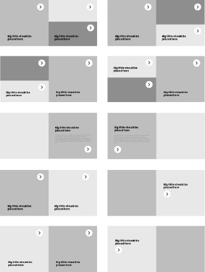

The Idea
The goal of this project was to create an e-commerce solution, that can be offered by a single company to clients from various industries. The solution needed to be functional in a multichannel or single brand/product context with an emphasis on the end users.
To achieve a unique look for each potential website, a modular system was designed. The system consists of several block-elements that can be re-configured in up to a 1000 different layouts, depending on the client needs. This way the company can produce up to 1000 websites that differ from each other.
To better understand the different functionalities that needed to be addressed, extensive research was done on both types of e-shops, focusing on product categorization and filtering. Placing the focus on these two functionalities results in a easier and faster user journey, from searching for a product to adding it in the cart and eventually placing an order.
